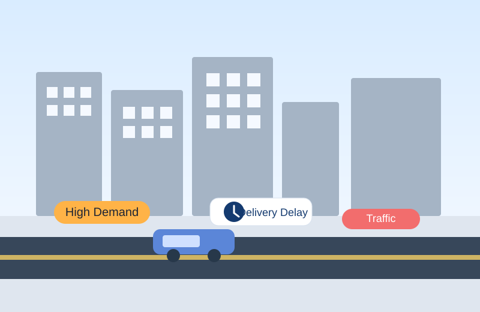
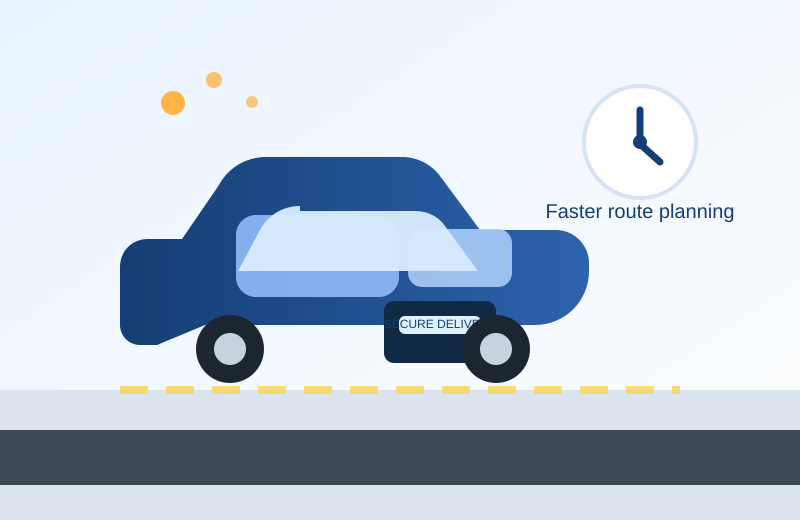
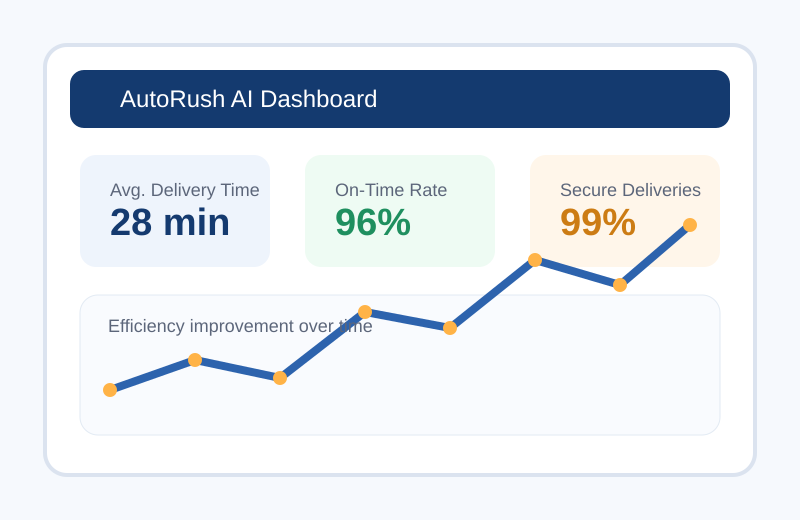
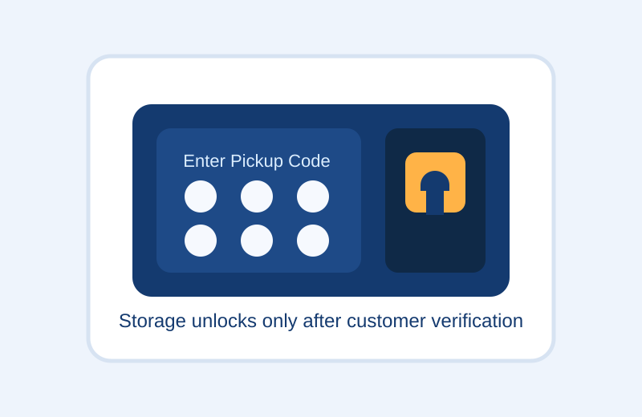

1. Tools & Technology
The website could be built with HTML, CSS, and JavaScript. The AI system could use Python, machine learning models, computer vision, route-planning software, GPS, and delivery APIs.
A proposal for an AI-powered delivery system that uses autonomous vehicles to bring food, medicine, groceries, and urgent purchases to customers faster, safer, and more securely.
Many people need important items delivered the same day, especially food, medicine, groceries, and household products. Traditional delivery services can be delayed by traffic, high demand, driver shortages, and rising labor costs.
These delays can be frustrating for customers and stressful for businesses. This problem is even more serious when people are waiting for prescriptions, baby supplies, or other urgent needs.
Businesses also face pressure to deliver faster while still keeping packages safe and reducing failed deliveries.


AutoRush AI is a self-driving delivery vehicle system designed for same-day delivery. Customers can order food, medicine, or other products and choose a premium AI delivery option.
The vehicle uses artificial intelligence, cameras, sensors, GPS, and route-optimization software to travel safely to the customer. Once it arrives, the trunk or storage compartment stays locked until the customer enters a secure one-time code.
The system can also detect tampering, attempted theft, or unsafe conditions and alert the company immediately.
The website could be built with HTML, CSS, and JavaScript. The AI system could use Python, machine learning models, computer vision, route-planning software, GPS, and delivery APIs.
The system would need map data, traffic conditions, customer addresses, delivery time windows, product details, secure access codes, and sensor data from the vehicles.
A customer places an order, the AI chooses the best route, the vehicle drives to the destination, and the package stays locked until the verified customer enters the pickup code.
Customer places a same-day order.
AI checks the destination, traffic, and urgency level.
The autonomous car is assigned and loaded.
The vehicle drives to the customer using sensors and navigation AI.
The customer enters a one-time code to unlock the storage area.
This system could reduce delivery delays, improve customer convenience, and help businesses handle more orders. It could be especially helpful for urgent deliveries like medicine or baby supplies.
Businesses could save time by automating parts of the delivery process, while customers would gain another fast delivery option. The service could also run longer hours and serve more areas without depending completely on human drivers.
Compared with current methods, AutoRush AI offers faster routing, stronger package security, and a more modern delivery experience.


Self-driving vehicles must be tested carefully so they can respond safely to pedestrians, traffic, weather, and unexpected road conditions.
Cameras, sensors, and customer location data must be protected. Access codes and customer information should be encrypted to reduce hacking and theft risks.
Businesses should make sure the service does not only benefit wealthier neighborhoods or customers who can pay extra. Fair access matters.
AI should support delivery operations, not remove all human responsibility. Humans still need to monitor the system, solve emergencies, and handle customer issues.
Through this project, I learned how to take an idea and turn it into a full AI proposal website with clear sections, images, and a professional layout. One challenge was making the idea feel realistic enough to explain how it would work in the real world, especially when thinking about safety, privacy, and road use. AI helped me organize the project, improve my wording, and build the website faster, but I still had to review everything carefully and make sure the final project matched my own vision.